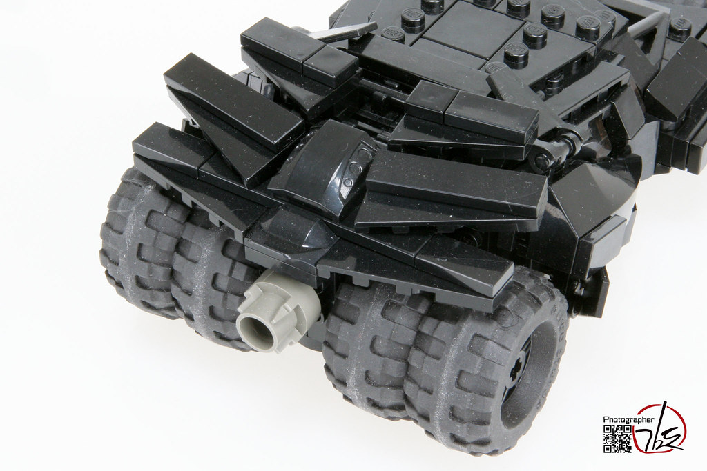
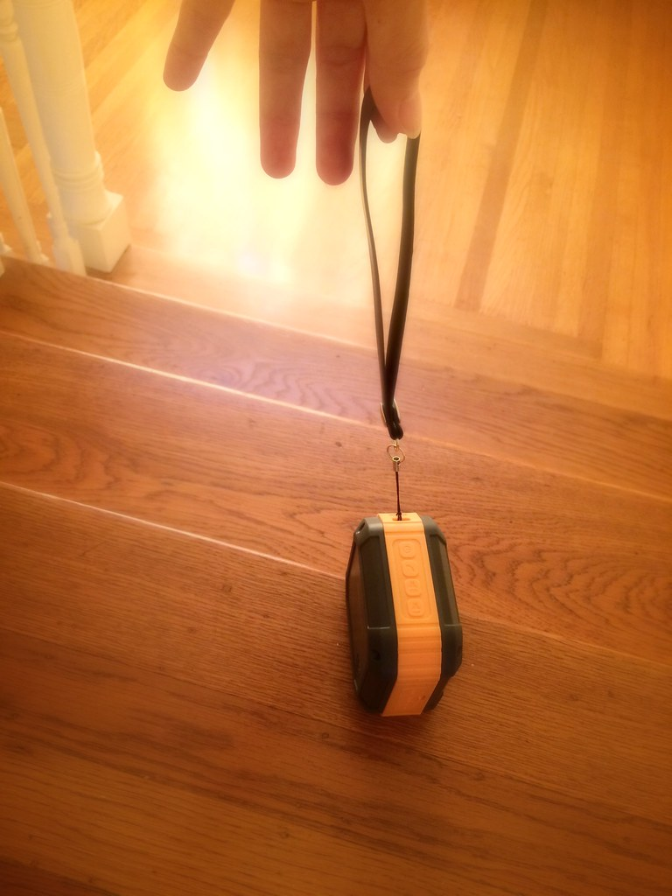

【2026年】大学生への就職祝いプレゼント5選｜友人別おすすめ

就職祝いは、大学生にとって大きな節目です。友人や家族として、相手の気持ちに寄り添うプレゼントを選ぶことが大切です。
この記事では、就職祝いプレゼントの選び方のポイントや、おすすめアイテムを紹介します。大学生への就職祝いプレゼントを選ぶ際の参考にしてください。
選び方のポイント
就職祝いプレゼントを選ぶ際のポイントは、相手の趣味や興味を考慮することです。相手の好きなものや、将来の夢を叶えるために必要なものをプレゼントすることで、相手の気持ちに寄り添うことができます。
また、プレゼントの価格も重要です。高価すぎるプレゼントは、相手に負担を感じさせる可能性があります。適切な価格のプレゼントを選ぶことが大切です。

1. 名入れタンブラー(サーモス・スタンレー)
¥3,000〜¥8,000
名入れタンブラーは、相手の名前を入れたユニークなプレゼントです。サーモス・スタンレーのタンブラーは、高品質で長持ちします。相手の毎日を彩るプレゼントです。

2. 高級腕時計(シチズン)
¥10,000〜¥50,000
高級腕時計は、相手の就職を祝うのに適したプレゼントです。シチズンの腕時計は、高品質でデザインにも優れています。相手の就職祝いを記念するプレゼントです。

3. ウィスキー(サントリー)
¥5,000〜¥20,000
ウィスキーは、相手の就職を祝うのに適したプレゼントです。サントリーのウィスキーは、高品質で味わい深いです。相手の就職祝いを祝うプレゼントです。

4. レザーワレット(モンベル)
¥2,000〜¥10,000
レザーワレットは、相手の就職を祝うのに適したプレゼントです。モンベルのレザーワレットは、高品質で長持ちします。相手の毎日を彩るプレゼントです。

5. ポータブルスピーカー(ソニー)
¥5,000〜¥20,000
ポータブルスピーカーは、相手の就職を祝うのに適したプレゼントです。ソニーのポータブルスピーカーは、高品質で音質にも優れています。相手の就職祝いを祝うプレゼントです。
おすすめアイテム
以下は、大学生への就職祝いプレゼントのおすすめアイテムです。これらのアイテムは、相手の気持ちに寄り添うものです。
各アイテムの特徴や価格を確認し、相手に合ったプレゼントを選ぶことができます。
プレゼントの意味
就職祝いプレゼントは、相手への祝福や応援の気持ちを表すものです。プレゼントを選ぶ際は、相手へのメッセージを込めることが大切です。
プレゼントの意味を考慮することで、相手の気持ちに寄り添うことができます。
Okuriteでは、贈る相手やシーンに合わせて
ぴったりのギフトを簡単に探せます。
まとめ
就職祝いプレゼントを選ぶ際は、相手の気持ちに寄り添うものを選ぶことが大切です。相手の趣味や興味を考慮し、適切な価格のプレゼントを選ぶことが重要です。
相手へのメッセージを込めたプレゼントを選ぶことで、相手の気持ちに寄り添うことができます。就職祝いプレゼントを選ぶ際は、相手の就職を祝う気持ちを込めることが大切です。